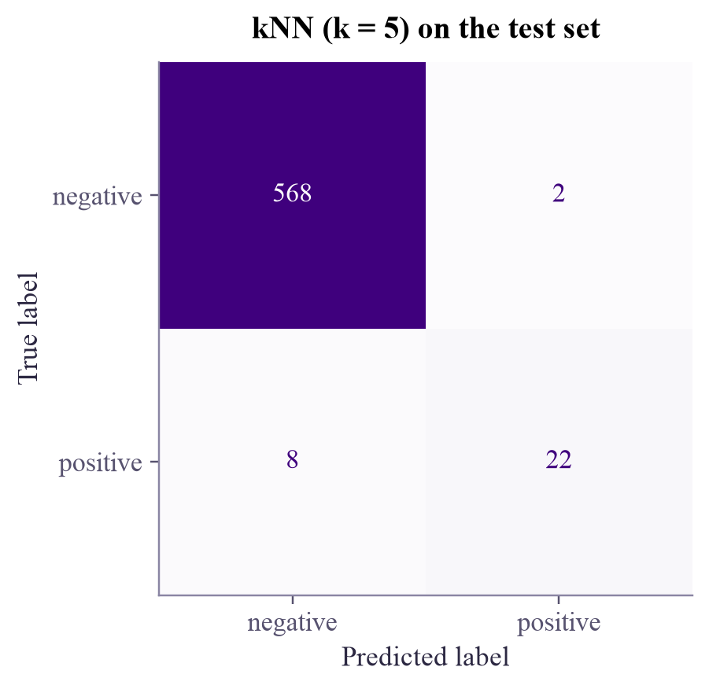

2000 examples, 100 positive (5%) test set: 600 examples, 30 positive
Machine Learning
 about 11 min
about 11 min ml-w1d5.ipynb
ml-w1d5.ipynb
Is my model any good?
Accuracy is only one number, and when one class is rare it can be a very misleading one. Meet the confusion matrix and the scores built from it.
In this lesson you will
- Read a confusion matrix: true and false positives and negatives
- Compute precision, recall, F1 and balanced accuracy, and know when each one matters
- Spot the accuracy trap on imbalanced data, and always compare with a lazy baseline
Warm-up
1 minA test that is right 95% of the time

5 in every 100 patients have a disease. A "test" that simply says healthy to everyone is right 95% of the time. Would you trust it? Of course not: it never finds a single sick person. Yet its accuracy is 95%. Today you'll learn the scores that catch this trick.
Big idea
4 minFour kinds of right and wrong
For a yes/no question ("is this patient sick?"), call the class we're looking for positive. Every prediction lands in one of four boxes, the confusion matrix:
| predicted positive | predicted negative | |
|---|---|---|
| really positive | true positive TP found it | false negative FN missed it |
| really negative | false positive FP false alarm | true negative TN correctly left alone |
Each score answers a different question:
The lazy "everyone is healthy" test has recall 0, so its F1 is 0 and its balanced accuracy is 50%: no better than a coin. That's the trap exposed.
Always compare a model with the lazy baseline that predicts the most common class. Beating 95% accuracy means nothing if the baseline already gets 95%.
Many models give a score rather than a yes/no, and you choose the threshold above which you say "positive". Lowering it finds more positives (recall up) but raises more false alarms (precision down). Which balance is right depends on what each mistake costs: missing a disease is usually far worse than a false alarm.
Play
3 minThe accuracy trap
100 patients, 5 of them sick. First try the lazy model, then switch to a real test score and move its threshold.
Find the sweet spot
Can you find all 5 sick patients? What does it cost in false alarms, and what happens to precision? Then find the threshold with the best F1. Notice that accuracy hardly moves while the other scores swing wildly.
Code
2 minThe scores in scikit-learn
The notebook for this lessonEvery code cell below, with what it printed, is in
ml-w1d5.ipynb. To change the code and run it yourself, open the notebook in Google Colab (free, in your browser) or download it for your own Jupyter.A dataset where only 5% of the examples are positive:
import numpy as np
from sklearn.datasets import make_classification
from sklearn.model_selection import train_test_split
X, y = make_classification(n_samples=2000, n_features=2, n_informative=2, n_redundant=0,
weights=[0.95, 0.05], class_sep=1.0, flip_y=0, random_state=4)
X_train, X_test, y_train, y_test = train_test_split(X, y, test_size=0.3, stratify=y, random_state=0)
print(f"{len(y)} examples, {y.sum()} positive ({y.mean():.0%})")
print(f"test set: {len(y_test)} examples, {y_test.sum()} positive")What it printed in the notebook
from sklearn.dummy import DummyClassifier
from sklearn.metrics import accuracy_score, balanced_accuracy_score, recall_score
lazy = DummyClassifier(strategy="most_frequent").fit(X_train, y_train)
pred = lazy.predict(X_test)
print(f"accuracy {accuracy_score(y_test, pred):.1%}")
print(f"recall (found) {recall_score(y_test, pred):.1%}")
print(f"balanced accuracy {balanced_accuracy_score(y_test, pred):.1%}")What it printed in the notebook
accuracy 95.0% recall (found) 0.0% balanced accuracy 50.0%
Now a real model. classification_report prints precision, recall and F1 for each class:
import matplotlib.pyplot as plt
from sklearn.neighbors import KNeighborsClassifier
from sklearn.metrics import ConfusionMatrixDisplay, classification_report
knn = KNeighborsClassifier(n_neighbors=5).fit(X_train, y_train)
pred = knn.predict(X_test)
ConfusionMatrixDisplay.from_predictions(y_test, pred, display_labels=["negative", "positive"],
cmap="Purples", colorbar=False)
plt.title("kNN (k = 5) on the test set")
plt.grid(False)
plt.show()
print(classification_report(y_test, pred, target_names=["negative", "positive"], digits=3))What it printed in the notebook

precision recall f1-score support
negative 0.986 0.996 0.991 570
positive 0.917 0.733 0.815 30
accuracy 0.983 600
macro avg 0.951 0.865 0.903 600
weighted avg 0.983 0.983 0.982 600from sklearn.metrics import precision_score, f1_score
score = knn.predict_proba(X_test)[:, 1]
print("threshold precision recall F1 balanced acc")
for t in [0.2, 0.4, 0.6, 0.8, 1.0]:
p = (score >= t).astype(int)
print(f" {t:.1f} {precision_score(y_test, p, zero_division=0):6.1%} {recall_score(y_test, p):6.1%}"
f" {f1_score(y_test, p):5.1%} {balanced_accuracy_score(y_test, p):6.1%}")What it printed in the notebook
threshold precision recall F1 balanced acc 0.2 72.2% 86.7% 78.8% 92.5% 0.4 92.0% 76.7% 83.6% 88.2% 0.6 91.7% 73.3% 81.5% 86.5% 0.8 90.9% 66.7% 76.9% 83.2% 1.0 90.0% 60.0% 72.0% 79.8%
Your turn
3 minYour turn: the scores by hand
Take the four counts out of the confusion matrix and compute precision, recall, F1 and balanced accuracy yourself, from the formulas above. Then check them against scikit-learn.
from sklearn.metrics import confusion_matrix
tn, fp, fn, tp = confusion_matrix(y_test, pred).ravel()
print("TN, FP, FN, TP =", tn, fp, fn, tp)
precision = None # TODO: of the examples called positive, the fraction that really are
recall = None # TODO: of the real positives, the fraction we found
print("precision:", precision, " recall:", recall)Need a hint?
Balanced accuracy needs the recall of the negative class too: (it's also called specificity).
Show a solution
tn, fp, fn, tp = confusion_matrix(y_test, pred).ravel()
precision = tp / (tp + fp)
recall = tp / (tp + fn) # also called sensitivity, or true positive rate
specificity = tn / (tn + fp) # the recall of the negative class
f1 = 2 * precision * recall / (precision + recall)
balanced = (recall + specificity) / 2
print(f"precision {precision:.3f} recall {recall:.3f} F1 {f1:.3f} balanced accuracy {balanced:.3f}")
print(f"scikit-learn says: F1 {f1_score(y_test, pred):.3f}, balanced accuracy {balanced_accuracy_score(y_test, pred):.3f}")What it printed in the notebook
precision 0.917 recall 0.733 F1 0.815 balanced accuracy 0.865 scikit-learn says: F1 0.815, balanced accuracy 0.865
Check yourself
2 minQuick check
Question 1 of 3
1% of transactions are fraud. A model that never flags fraud has 99% accuracy. Its balanced accuracy is…
Question 2 of 3
A spam filter must almost never send a real email to the spam folder. Which score matters most?
Question 3 of 3
A model has TP = 8, FN = 2, FP = 10, TN = 80. What are its recall and precision?
Wrap-up
1 minToday in one sentence
Quantum link
Rare events are exactly where people hope quantum models might help: a faulty qubit, an unusual particle decay, a fraud case. They are also exactly where plain accuracy misleads. Benchmarking quantum classifiers on imbalanced data, with the right scores, is one of the research directions in Sara's group.
Go deeper (optional)
ISLP chapter 4 (Classification) works through a credit-card default dataset where only 3% of people default, with confusion matrices, changing thresholds and ROC curves.
That's week 1 of Machine Learning! On Saturday there's an optional five-minute flashback. Monday: regression, where the answer is a number.

That's the lesson!
Tap the button to save it. Short and steady wins.
Marked by mistake? Undo